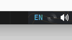
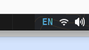
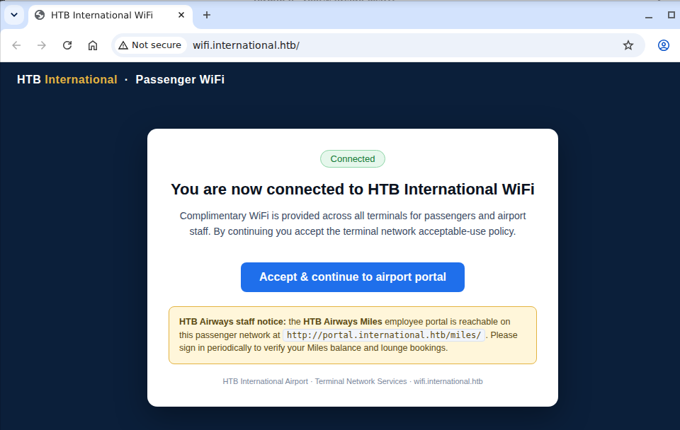
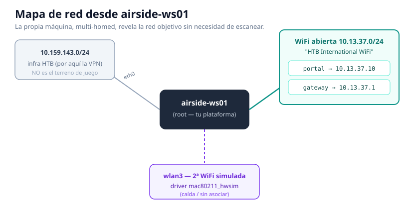

1 · Discovery (T1016 / T1046)¶
Objetivo: descubrir que existe la red WiFi 10.13.37.0/24 y qué hosts viven en ella.
1.1 · Orientación¶
Acabas de ganar un shell en una máquina de la que no sabes nada. Antes de mirar la red, oriéntate. Tres preguntas, lo mínimo imprescindible:
¿Qué host es este? (sistema y kernel)
hostname # airside-ws01 → hay más "estaciones"
lsb_release -a # distro y versión
cat /etc/os-release # lo mismo, si no está lsb_release
uname -a # kernel → relevante para privesc
¿Quién soy? (privilegios y grupos)
id # uid, gid y grupos de un vistazo
groups # grupo `wireshark`: relevante para capturar tráfico
sudo -l # ¿qué puedo ejecutar como root?
Analizar el output de id (clic)
uid=1001(contractor) gid=1001(contractor) groups=1001(contractor),27(sudo),111(netdev),121(wireshark)
Formato número(nombre): el número lo usa el kernel; el nombre es la etiqueta de /etc/group.
uid=1001(contractor)→ quién eres.uid=0sería root; los humanos suelen ir desde 1000.gid=1001(contractor)→ tu grupo principal (dueño por defecto de los archivos que creas).groups=...→ todos tus grupos = tu superficie de ataque. Los que importan:27(sudo)→ ejecutar como root consudo.111(netdev)→ gestionar interfaces de red sin ser root.121(wireshark)→ capturar tráfico de red sin ser root.
Que un usuario normal pueda capturar tráfico y tocar interfaces de red sin root es poco común → capacidades a tener muy presentes.
Analizar el output de sudo -l (clic)
Matching Defaults entries for contractor on airside-ws01:
env_reset, mail_badpass, secure_path=/usr/local/sbin:...:/snap/bin, use_pty
User contractor may run the following commands on airside-ws01:
(ALL : ALL) ALL
sudo -l lista qué puedes ejecutar con sudo. La línea que importa es la última:
(ALL : ALL) ALLse lee(usuarios : grupos) comandos:- 1.º
ALL→ como cualquier usuario (incluido root). - 2.º
ALL→ como cualquier grupo. - 3.º
ALL→ cualquier comando, sin restricción.
- 1.º
- Traducción: sudo total →
sudo -ida un shell root inmediato. - Los Defaults de arriba (
env_reset,secure_path,use_pty…) son políticas de seguridad; no limitan qué puedes correr.
Root aquí es parte de la plataforma que te entregan, no una escalada que hayas ganado.
¿Dónde estoy? (interfaces y rutas). Aquí ya empieza el discovery de red.
Analizar el output de ip a (clic)
1: lo <LOOPBACK,UP> inet 127.0.0.1/8
6: wlan2 <NO-CARRIER,...,UP> DOWN link/ether 02:00:00:00:02:00 (sin IP)
7: wlan3 <NO-CARRIER,...,UP> DOWN link/ether 02:00:00:00:03:00 (sin IP)
10: eth0@if11 <...,UP,LOWER_UP> UP link/ether 00:16:3e:83:ea:41
inet 10.159.143.45/24 scope global dynamic eth0
lo→ loopback (127.0.0.1). Irrelevante.eth0es la ÚNICA con IP:10.159.143.45/24→ estás en la red 10.159.143.0/24.eth0@if11+link-netnsid 0→ es un veth (par virtual) → estás dentro de un contenedor.- MAC
00:16:3e:…(eth0 y el gateway) → OUI de Xen/LXD → confirma contenedor LXD. wlan2ywlan3:DOWN,NO-CARRIER, sin IP → hay dos adaptadores WiFi pero no asociados a ninguna red aún.- MACs WiFi
02:00:00:00:0X:00→ secuenciales y "02:" (localmente administradas) = adaptadores simulados (mac80211_hwsim), no hardware real. - Deducción: tienes dos adaptadores WiFi simulados pero caídos. El siguiente paso natural es levantarlos y ver qué hay en el aire.
Analizar el output de ip route (clic)
default via 10.159.143.1 dev eth0 proto dhcp src 10.159.143.45
10.159.143.0/24 dev eth0 proto kernel scope link src 10.159.143.45
10.159.143.1 dev eth0 proto dhcp scope link src 10.159.143.45
- Todo va por
eth0→ la única red que alcanzas ahora es 10.159.143.0/24. default via 10.159.143.1→ tu salida es el gateway.1.proto dhcp→eth0se configuró por DHCP, no estático.
Analizar el output de arp -a (clic)
- Un solo vecino conocido: el gateway
10.159.143.1. _gateway.lxd→ el sufijo.lxdconfirma entorno LXD (contenedores).- MAC
00:16:3e:…→ otra vez el OUI de Xen/LXD. - Nada más en la tabla → en la red de infraestructura no hay otros hosts interesantes; el juego está en la WiFi (que aún debes conectar).
¿Hasta dónde llega 'conocer el hardware'? (clic)
Perfilar CPU/RAM/disco suele ser exagerado en un CTF. La única pieza de "hardware" que importa aquí son las interfaces de red. Por si quieres explorar esa parte:
lspci # dispositivos PCI (verás los adaptadores WiFi)
ethtool -i wlan2 # driver de la interfaz → mac80211_hwsim
dmesg | grep hwsim # confirma que las WiFi son simuladas
iw dev # interfaces inalámbricas y su modo
mac80211_hwsim = WiFi simulada. Eso es lo relevante; CPU, RAM y disco no aportan aquí.
Dos cosas a retener de esta orientación: estás en el grupo wireshark (puedes capturar tráfico)
y la máquina no tiene internet →
Restricción del entorno (clave)
airside-ws01 no tiene salida a internet (apt devuelve Ign:). → no se puede instalar
nada: ni nmap, ni netdiscover, ni ffuf. Hay que usar solo lo que ya está instalado.
¿Y qué hay "presente"? Dos formas de averiguarlo:
compgen -c→ todos los comandos que el shell puede ejecutar.command -v <lista>→ busca aplicaciones concretas e imprime solo las que existen. Aquí confirma que estáncurl wget python3 nc ssh scp tcpdump tshark gity que faltannmap gobuster ffuf→ por eso toca usar solo lo instalado o pivotar.
1.2 · Enfoque¶
"No tengo escáneres. ¿Qué sabe la máquina de la red sin preguntarle a nadie?"
La propia máquina ya está conectada a la red objetivo. Su configuración te lo revela gratis.
1.3 · Procedimiento¶
Estado inicial — enumeramos lo que hay:
- La única interfaz con IP es
eth0(10.159.143.45/24) → estás en la red de infraestructura10.159.143.0/24.arp -asolo muestra su gateway; nada más. wlan2ywlan3estánDOWN(apagadas), sin IP. Hay dos adaptadores WiFi (simulados,mac80211_hwsim) pero no conectados a ninguna red. La bandeja del sistema lo confirma:

Levantar la WiFi — las interfaces están caídas, así que subimos wlan2 y escaneamos qué hay:
ip link set wlan2 up
iw dev wlan2 scan | grep SSID
# SSID: HTB International WiFi ← hay una red a la vista
Intentamos asociarla a mano. Los errores dicen algo:
iw dev wlan2 connect "HTB International WiFi"
# command failed: Operation already in progress (-114)
dhclient wlan2
# Command 'dhclient' not found
Operation already in progress (-114)→ un gestor de conexión del sistema ya está asociandowlan2a la red abierta por su cuenta; no hay que hacerlo a mano.dhclientno está (y sin internet no se puede instalar) → tampoco necesitas pedir DHCP manualmente: ese mismo gestor obtiene la IP.
En resumen: bastó con subir la interfaz. El sistema la asocia a la red abierta y toma el lease solo.
Lo confirma el ip a de abajo.
Ahora la WiFi aparece conectada a una red:

La página de bienvenida revela el objetivo. Al conectar con esa red, wifi.international.htb abre una página automáticamente:

"You are now connected to HTB International WiFi … the HTB Airways Miles employee portal is reachable on this passenger network at
http://portal.international.htb/miles/."
- SSID:
HTB International WiFi(abierta, para "pasajeros"). - Página de bienvenida:
wifi.international.htb. - Objetivo revelado por la propia página:
portal.international.htb/miles/.
ip a confirma el resultado: wlan2 pasó de caída a UP con IP en el segmento WiFi:
6: wlan2: <BROADCAST,MULTICAST,UP,LOWER_UP> mtu 1500 qdisc noqueue state UP group default qlen 1000
link/ether 02:00:00:00:02:00 brd ff:ff:ff:ff:ff:ff
inet 10.13.37.182/24 brd 10.13.37.255 scope global dynamic noprefixroute wlan2
valid_lft 41778sec preferred_lft 41778sec
inet6 fe80::a9cf:a989:ceb6:e9d8/64 scope link noprefixroute
7: wlan3: <NO-CARRIER,BROADCAST,MULTICAST,UP> mtu 1500 qdisc noqueue state DOWN group default qlen 1000
link/ether 02:00:00:00:03:00 brd ff:ff:ff:ff:ff:ff
10: eth0@if11: <BROADCAST,MULTICAST,UP,LOWER_UP> mtu 1500 qdisc noqueue state UP group default qlen 1000
link/ether 00:16:3e:83:ea:41 brd ff:ff:ff:ff:ff:ff link-netnsid 0
inet 10.159.143.45/24 metric 100 brd 10.159.143.255 scope global dynamic eth0
valid_lft 3100sec preferred_lft 3100sec
wlan2: deDOWNaUP, con10.13.37.182/24por DHCP → ya estás dentro de10.13.37.0/24.wlan3: sigue caída → disponible.eth0: sin cambios (la red de infra).
Ya en el segmento WiFi, podrías enumerarlo (el portal, otros hosts) antes de nada. Pero hay una observación que abre una vía mejor:
Conjetura: el puente hacia la captura de tráfico
- La WiFi es abierta (sin cifrado) → cualquiera en el canal ve el tráfico de todos.
- El portal se sirve por HTTP (la propia página de bienvenida es
http://, sin TLS) y pide iniciar sesión. - Si otros usuarios se conectan a esta misma red y se loguean…
- ¿…podríamos capturar su tráfico inalámbrico y leer esas credenciales?
Es una hipótesis, no un hecho: hay que montar la captura y comprobarlo. Eso es justo lo que exploramos a continuación.
1.4 · Conclusión¶
Tras asociarte a la WiFi abierta estás dentro de 10.13.37.0/24, y la página de bienvenida te ha
revelado el objetivo: portal.international.htb/miles/ (el portal Miles de HTB Airways).

1.5 · Root en el workstation¶
Antes de capturar tráfico necesitamos privilegios. El workstation nos los regala:
Esto no es el privesc del reto
El workstation te concede sudo total de entrada: root aquí es parte de la plataforma que te entregan, no un objetivo que hayas tenido que ganar. Tenerlo te permitirá hacer cosas que requieren privilegios en los pasos siguientes. No lo confundas con una escalada conseguida por ti.
1.6 · Rutas alternativas¶
ip neigh/cat /proc/net/arp— equivalentes aarp -a.ip route— qué redes alcanza la máquina./etc/hosts, config DHCP,resolv.conf— dominiointernational.htb.iw dev+/sys/class/net/*/phy80211/— confirmar que son interfaces simuladas.tcpdump -i wlan2unos segundos — ver qué direcciones aparecen solas.netdiscoverno se usó y no se puede instalar aquí → queda como ejercicio teórico.
Captura
(Espacio para la salida de ip a resaltando wlan2 con su IP 10.13.37.182/24.)
Siguiente: Táctica 2 · Network Sniffing